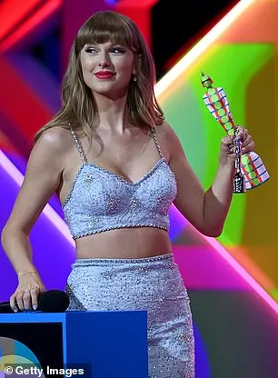
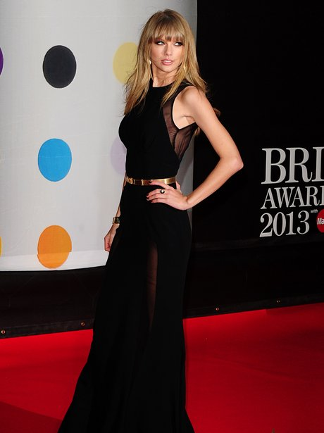

The BRIT Awards (often simply called the BRITs) are the British Phonographic Industry's annual popular music awards. The name was originally a shortened form of "British", "Britain", or "Britannia" (in the early days the awards were sponsored by Britannia Music Club), but subsequently became a backronym for British Record Industry Trusts Show. In addition, an equivalent awards ceremony for classical music, called the Classic BRIT Awards, is held in May. The awards were first held in 1977 and originated as an annual event in 1982 under the auspices of the British record industry's trade association, the BPI. In 1989, they were renamed The BRIT Awards. Mastercard has been the long-term sponsor of the event.
The highest profile music awards ceremony in the UK, the BRIT Awards have featured some of the most notable events in British popular culture, such as the final public appearance of Freddie Mercury, the Jarvis Cocker protest against Michael Jackson, the height of a high-profile feud between Oasis and fellow Britpop band Blur, the Union Jack dress worn by Geri Halliwell of the Spice Girls, and a Chumbawamba member throwing a bucket of iced water over then-Deputy Prime Minister John Prescott.
These moments took place in the 1990s when the ceremony had a reputation for being “a little shambolic, unpredictable and, at times, anarchic” with a criticism it has lost its edge since then and “evolved into a more polished, sanitised affair.
The BRIT Awards were broadcast live until 1989, when Samantha Fox and Mick Fleetwood hosted a widely criticised show in which little went as rehearsed. From 1990 to 2006, the event was recorded and broadcast the following night. From 2007, The BRIT Awards reverted to a live broadcast on British television, on 14 February on ITV. That year, comedian Russell Brand was the host and three awards were dropped from the ceremony: British Rock Act, British Urban Act and British Pop Act. For the last time, on 16 February 2010, the venue for The BRITs was the Earls Court Exhibition Centre in London. The BRIT Awards were held at the O2 Arena in London for the first time in 2011.
The BRIT Award statuette given to the winners features Britannia, the female personification of Britain. Since 2011, the statuette has been regularly redesigned by some of the best known British designers, stylists and artists, including Vivienne Westwood, Damien Hirst, Tracey Emin, Peter Blake, Zaha Hadid, Anish Kapoor and David Adjaye. In 1992, KLF opened the show and invited extreme metal band Extreme Noise Terror on stage, complete with flame-throwers, and fired machine gun blanks over the crowd. The group sent a dead sheep to the aftershow party, and later buried their BRIT Award statuette at Stonehenge signifying their abhorrence of the music industry.
Robbie Williams holds the record for the most BRIT Awards, 13 as a solo artist and another five as part of Take That. 
Girl group Little Mix made history at the 2021 Brit Awards, when they became the first female group to receive the award for Best Group at the ceremony after 43 years since it was first introduced.
The first awards ceremony was in 1977, as "The BRITish Record Industry BRITannia Awards", to mark the Queen's Silver Jubilee and was televised by Thames Television. There has been an annual ceremony since 1982.
The 1988 BPI Awards was the first of the ceremonies to be broadcast on live television. The BBC had previously broadcast the ceremony from 1985, with the shows from 1982 to 1984 not broadcast on television. The BBC continued to broadcast the renamed BRIT Awards, live in 1989 and pre-recorded from 1990 to 1992. ITV have broadcast the awards since 1993, pre-recorded until 2006 and live from 2007 onwards. BBC Radio 1 has provided backstage radio coverage since 2008.
Since 2014, ITV have aired a launch show in January titled The BRITs Are Coming, which reveals some of the artists who have been nominated at the upcoming ceremony. The first host was Nick Grimshaw, followed by Reggie Yates (2015) and Laura Whitmore in 2016. Emma Willis hosted The BRITs Are Coming in 2017 and again in 2018 when it was broadcast live for the first time. Clara Amfo hosted the 2019 launch show and Alice Levine hosted in 2020. Amfo later returned and was joined by Maya Jama as co-host in December 2021.
Taylor Swift was presented with the "Global Icon Award" in 2021.